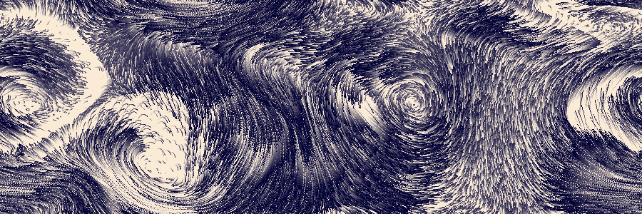
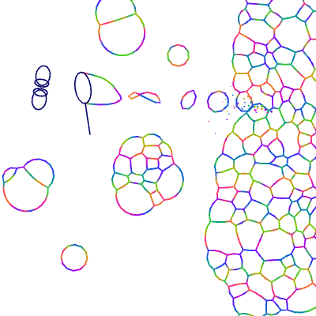
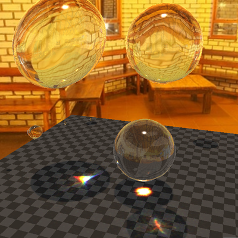
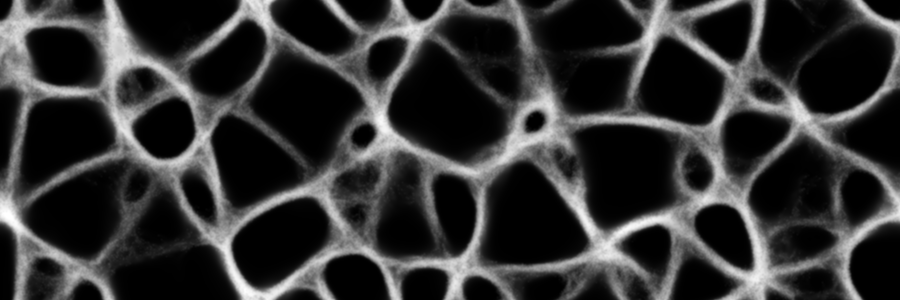
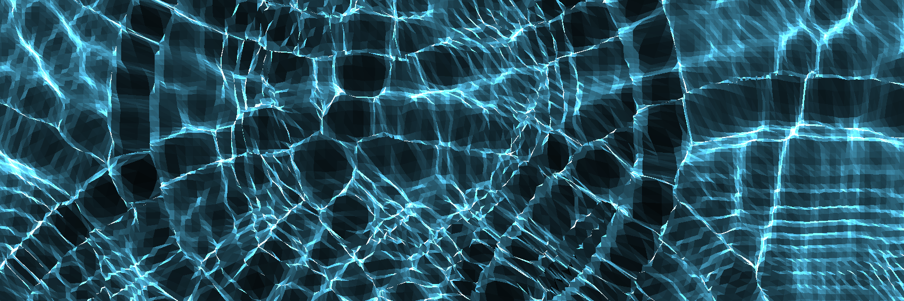
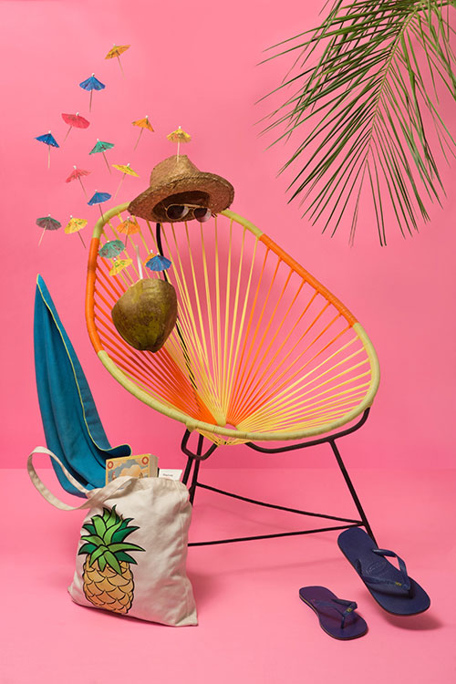

001
Shader clock
Open demo ↗
001
Shader clock
Open demo ↗
Clock
A WebGL clock whose numerals dissolve into particles; time is drawn rather than pointed at.
FormType
MechanismGenerate
EngineWebGPU
A new room in Frontier Atlas · 61 works · 4 axes
Four authors and one editorial archive, rebuilt as a place you can walk through. Every card opens a local demo; every demo has its complete repository beside it. The wall is now classified: form, mechanism, engine and tempo.
四个作者、四十一个 Codrops 精选，装进六个分卷；61 件作品全部按「形态 / 机制 / 渲染栈 / 气质」四条轴重新分类。每条都有完整源码与本地可运行 demo，源码就在本仓 source/ 下。
 Specimen 006 / WaterSaharan · Oimo
Specimen 006 / WaterSaharan · Oimo
A deep-water shader of caustics and foam. The source sits three folders away, in the same repository.
Grouped by author and tempo: four source authors, then Codrops split into motion and worlds.
01 / 06Saharan / Oimo
Six small worlds from a single GPU engine: water, bubbles, moss, rain and a clock made of particles.
6 worksEnter volume ↗ 02 / 06David Li
02 / 06David Li
Paint, flow, waves and fluid — four WebGL studies that became the reference for interactive liquids on the web.
4 worksEnter volume ↗
03 / 06Amanda GhassaeiOrigami, vortex shedding and four gpu-io examples: GPU compute treated as a material you can fold, stir and grow.
6 worksEnter volume ↗ 04 / 06Jeantimex
04 / 06Jeantimex
A flight globe, a water surface, a lenticular lens and rain on glass — four WebGPU scenes with a physical streak.
4 worksEnter volume ↗ 05 / 06Codrops · MotionFourteen transitions, scroll systems and cursor experiments from the Codrops archive — the mechanics behind the effect.
14 worksEnter volume ↗ 06 / 06Codrops · Worlds
06 / 06Codrops · Worlds
Twenty-seven grids, galleries, menus and cards: the layouts that make a flat page feel like a room.
27 worksEnter volume ↗Every plate opens the local build. Every Source link opens the copy inside this repository, not the upstream page. Read the index ↗
001
Shader clock
Open demo ↗
A WebGL clock whose numerals dissolve into particles; time is drawn rather than pointed at.
 002
Cellular life
Open demo ↗
002
Cellular life
Open demo ↗
Conway's Game of Life as a galaxy: a huge cell field drifting through a dark universe.

003 Refraction Open demo ↗Soap-film bubbles bend light and colour in real time; every surface is a small lens.
 004
Organic growth
Open demo ↗
004
Organic growth
Open demo ↗
A soft moss-ball ecosystem sways underwater, grown procedurally with no keyframes.

005 Surface tension Open demo ↗Raindrops hit a dark surface, merge and scatter light: a study in surface tension.
006
Caustics
Open demo ↗
Deep water built from a single fragment shader — caustics, foam and a slow moving surface.
Fluid paint you can drag across the canvas; pigment advects, bleeds and never dries.
008
Particle field
Open demo ↗
A particle field follows curl noise; sliders expose the forces behind the current.
A height-field ocean with a movable camera and a wall of controls; the original WebGL wave lab.
David Li's classic Navier–Stokes solver, rendered as ink suspended in a glass box.
 011
Vortex street
Open demo ↗
011
Vortex street
Open demo ↗
A GPU fluid experiment that makes a cylinder shed alternating vortices, the way a river does.
 012
Origami
Open demo ↗
012
Origami
Open demo ↗
Realtime WebGL origami: crease patterns fold, strain maps bloom, and paper becomes structure.
The gpu-io fluid example: dye, velocity and pressure ping-ponging through framebuffers.

014 Agent systems Open demo ↗Slime-mould agents leave trails that become transport networks; a classic of agent-based art.
 015
Reaction–diffusion
Open demo ↗
015
Reaction–diffusion
Open demo ↗
Gray–Scott reaction–diffusion on the GPU, coral-like patterns growing from a single seed.

016 Wave equation Open demo ↗A 2D wave equation solved in a shader; click to send ripples through the field.
A globe of live flight paths, drawn in three.js over a dark topographic world.
Evan Wallace's water rewritten for WebGPU: refraction, reflection and a draggable light.
A WebGPU lenticular print: tilt the lens and the image shifts between frames.
Rain on a window, refracted through a WebGPU surface: a study in droplets and light.
Full-bleed pages slide over each other; the transition itself becomes the navigation.
Phone, tablet and monitor shapes morph into each other as one continuous object.
A set of buttons that answer the cursor with fills, borders and small physics.
A cover lifts, folds and reveals the next page: a title sequence for a website.
RGB channels split and scanlines tear as the image tilts in perspective.
Panels scroll at different speeds with clipped reveals and sticky captions.
Type enters line by line, word by word, driven by scroll position.
A full-screen image is revealed through a moving clip path, like a curtain cut.
 029
Cursor
Open demo ↗
029
Cursor
Open demo ↗
A metaball cursor stretches, splits and merges around the pointer.
A grid of tiles flows open in a wave, each cell offset by a fraction of a second.
 031
Sticky sections
Open demo ↗
031
Sticky sections
Open demo ↗
Sections pin in place while their content scrolls past, then release.
A stack of cards rotates in depth on scroll, each layer sliding out of alignment.
 033
Typographic image
Open demo ↗
033
Typographic image
Open demo ↗
An image grows out of a word and fills the line, then retreats.
 034
Carousel
Open demo ↗
034
Carousel
Open demo ↗
A circular carousel that turns as you scroll, cards facing the centre.
The hover effect reads which edge the cursor enters, then sends the image that way.
A Swift content-navigation plugin; panels rotate away like cards caught in a gust.
A card-deck slider that spreads items across the table, then stacks them back.
A 3D image stack you drag through; each slide peels off the pile.
Click a thumbnail and the grid opens a preview in place, without leaving the page.
Seven ways to leave a page: wipes, folds, pushes and reveals.
A grid that reflows around a selected item, animating every neighbour out of the way.
Modals that arrive by scale, slide, blur and fold rather than a plain fade.
Line icons draw themselves on hover, stroke by stroke.
Drag a stack of cards past its threshold and it snaps to the next one with elastic weight.
A menu that pushes the page back in 3D space, then slides a panel over it.
A 'look inside' book: pages turn with a soft shadow, revealing the spread beneath.
 047
Polaroid gallery
Open demo ↗
047
Polaroid gallery
Open demo ↗
Polaroids fall into a loose pile, then snap into a neat strip when you click.
A mosaic grid with labels and a full-screen viewer; the original Google-style gallery.

049 Menu morph Open demo ↗A full-screen menu decomposes into a grid of thumbnails, then reassembles.
 050
SVG filter
Open demo ↗
050
SVG filter
Open demo ↗
An SVG turbulence filter distorts the image as it passes through the viewport.
A 3D grid accelerates toward the viewer as you scroll, lines converging to a vanishing point.
 052
Slideshow
Open demo ↗
052
Slideshow
Open demo ↗
Full-screen images change through wipes, scales and layered reveals.
Images leave trails of themselves as they move, like long-exposure photography.
 054
3D grid
Open demo ↗
054
3D grid
Open demo ↗
A grid of planes tilts and cascades in 3D, with each row delayed.
 055
Elastic grid
Open demo ↗
055
Elastic grid
Open demo ↗
The grid stretches against the scroll and springs back when you stop.
A button that inflates into a glossy 3D balloon under the cursor.
 057
Rotation
Open demo ↗
057
Rotation
Open demo ↗
Images rotate through 3D space as they enter and leave the viewport.
058
Cinema
Open demo ↗
Pick a seat in a 3D cinema and see the screen from that angle.
 059
Seam
Open demo ↗
059
Seam
Open demo ↗
Pages join along a seam that opens, folds and closes into the next view.
 060
Lookbook
Open demo ↗
060
Lookbook
Open demo ↗
Fashion lookbook hovers: images slide, crop and reveal alternate angles.
 061
Inline reveal
Open demo ↗
061
Inline reveal
Open demo ↗
Inline images bloom out of body text as the cursor passes over links.
Nothing matches that combination. Try another cell, clear a facet, or reset the wall.